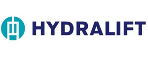
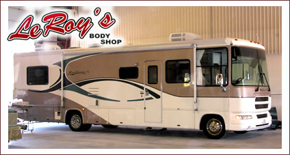

FACILITIES
Technology & Equipment We Use
We know our customers want the very best service and repairs and that all starts with LeRoy's investment in the best products, equipment, technology in the auto body repair industry. We don't top there as we train our professional repair specialists on how to use these facilities to get the highest quality repairs. Learn more about the backbone of our operation and see what we use to get the repairs done right and right now!
Lasers
What was once good enough is history. Today, training in the latest equipment is required to assure customer satisfaction. Nothing has proven to increase the quality and accuracy of auto repairs like the use of laser technology. We use a laser measuring system which combines the latest in laser and computer technology to identify damage to your vehicle which would otherwise go undetected by the naked eye. Using two rotating lasers that precisely measure the structural components of your vehicle delivers and even higher level of accurate repairs. Throughout the repair process, the computer compares the measurements to your vehicle’s correct specification to ensure the most accurate repairs are made. Fewer mistakes also mean lower prices and faster repairs for you!
Frame Benches and Racks
The frame is foundation on which we do all your body work. Not only will a badly repaired frame decrease drive ability of your car, if the frame is not straight it may cause unnecessary wear on your vehicle and in some cases will cause additional damage. Shops that do not take frame straightening as serious as LeRoy's and invest in the state of art Hydra Lifts and more equipment for each type of service required will not product the level of quality repairs that LeRoy's can. Safety should be on your mind when you bring your car into the repair shop to have your auto body fixed. We treat your car as if it were our own family's car, making sure that it rides it can perform in Michigan's wide range of weather and road conditions in the highest standards for your car.
Paints & Automotive Finishes
LeRoy's chooses to use PPG Automotive Paint to bring your vehicle back to near showroom quality. We use the PPG system to match the manufacture’s original paint color, then we apply a resistant clear-coat to protect your vehicle’s shiny new finish. Our body shop is equipped with multiple paint stations and additional drive-through paint booths which can accommodate any size vehicle. The end result is a nearly perfect paint job which will comes with a lifetime paint warranty.
Vehicle Repair Facilities
LeRoy's Body Shops have the trained personnel and latest equipment to offer collision and alignment services for the smallest collectible antique roadster all the way through to the largest trucks. Our services run the gamut from automotive restoration, body repair, frame & wheel alignment to truck & SUV repairs.
Large Paint Room...
Our clean room has space to work on four cars at once so for larger vehicles that other shops can't handle...we can! We have the capability of performing wheel alignment and frame straightening on any size vehicle and can guarantee straight tracking of your car or truck. In fact, between our two facilities, LeRoy's has well 30,000 sq. ft. of combined work space to accommodate virtually any vehicle type.
Restoration Services
In addition to utilizing all cutting edge technologies to achieve high-quality repairs like PPG® Automotive Paint and Garmat® Restoration Equipment. Our spray booths work for Truck, Custom and Industrial refinishing projects. Our spray booths used for restoring your vehicle have been custom designed to meet our specific customer requirements for automotive, commercial, heavy-duty and industrial applications. As well, we rely on highly trained staff to accomplish these difficult repairs.
Certified Staff
Our staff includes more than 20 highly-trained technicians certified by the Automotive Technical Education Group and our entire automotive staff has completed I-CAR training. Well-trained staff is only the first part. The next important factor in the success of LeRoy's Body Shops is our use the highest quality replacement parts and equipment.
Classic Car Expertise
Do you have a "classic car" that you wouldn't trust to just anyone for service? If so, we invite you to meet with us for a tour of our facilities and an opportunity to meet our staff. Our technicians specializing in the repair and restoration of classic cars treat each one as though it was their own. You can be confident that your project will go smoothly and as planned when you entrust it to the LeRoy's Body Shops skillful personnel.
Our Promise to You
We promise to always provide value and outstanding service, regardless of repair size or difficulty.